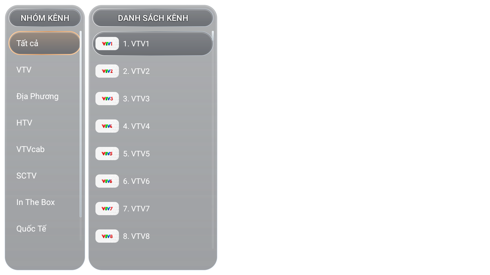
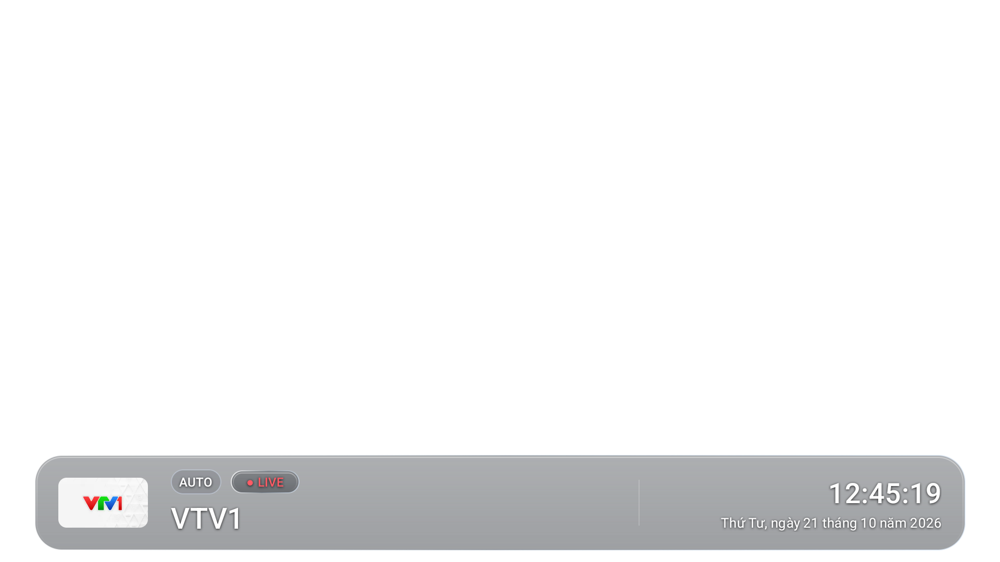
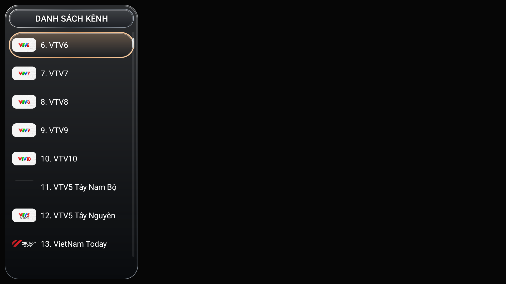

01Kênh bạn thích.
Kênh bạn thích.
Luôn trong tầm tay.
Duyệt theo nhóm VTV, địa phương, HTV, VTVcab, SCTV và quốc tế. Logo kênh rõ ràng, danh sách dễ theo dõi bằng remote.

VIETMITV V22 · BẢN QUỐC TẾ
DÀNH CHO GOOGLE TV & ANDROID TVTruyền hình thân quen. Trải nghiệm mới.
Mang VietMiTV lên màn hình lớn với giao diện
gọn gàng, điều khiển nhẹ nhàng và dễ làm quen.
01 / TRẢI NGHIỆM VIETMITV
Duyệt theo nhóm VTV, địa phương, HTV, VTVcab, SCTV và quốc tế. Logo kênh rõ ràng, danh sách dễ theo dõi bằng remote.

Di chuyển bằng phím điều hướng, chọn kênh và mở menu ngay trên TV.
Nhãn LIVE, chất lượng kênh, đồng hồ và ngày rõ ràng. Bảng thông tin tự ẩn để nhường chỗ cho chương trình.

Menu tích hợp tác vụ tải lại playlist và kiểm tra cập nhật ứng dụng. Phiên bản v22 làm mới lớp điều khiển, giữ chức năng phát kênh của v21.
Xem bản phát hànhẢnh giao diện được chụp trực tiếp từ ứng dụng v22. Lớp video không được ghi lại trong ảnh nên vùng phát hiển thị nền đen.
02 / DỊCH VỤ VIỆT XIAOMI
Hỗ trợ cài đặt từ xa qua điện thoại hoặc máy tính.
Bạn ở nhà, mình đồng hành trong từng bước.
DÀNH CHO TV XIAOMI NỘI ĐỊA
Tiếp nhận thông tin model, kiểm tra thiết bị và tư vấn cài ứng dụng phù hợp cho TV Xiaomi nội địa của bạn.
Tư vấn TV XiaomiDÀNH CHO TV & TV BOX
Cài ứng dụng cho TV và TV Box từ xa qua điện thoại hoặc máy tính. Trao đổi nhu cầu và tình trạng thiết bị trước khi thực hiện.
Hẹn hỗ trợ từ xa
03 / SẴN SÀNG TRÊN TV CỦA BẠN
VietMiTV v22 · Bản quốc tế
Dành cho Google TV và Android TV.
Tải APK và chuyển file sang TV bằng USB hoặc công cụ gửi file bạn đang dùng.
Mở APK. Nếu được yêu cầu, cho phép ứng dụng quản lý file cài ứng dụng từ nguồn này.
Kết nối Internet, mở ứng dụng và làm theo hướng dẫn hiển thị trên TV.
MỘT CHÚT ĐỒNG HÀNH
Nếu VietMiTV giúp thời gian xem TV của bạn vui hơn,
bạn có thể ủng hộ để tiếp thêm động lực duy trì ứng dụng.
Mỗi sự ủng hộ đều đáng quý. Cảm ơn bạn!
GIẢI ĐÁP NHANH
Đây là bản VietMiTV Google TV v22 quốc tế. Nếu dùng TV Xiaomi nội địa, hãy liên hệ Việt Xiaomi để kiểm tra model và tư vấn bản phù hợp.
Gửi model TV/TV Box, ảnh tình trạng thiết bị và nhu cầu qua Zalo. Chuẩn bị mạng Internet cùng điện thoại hoặc máy tính; Việt Xiaomi sẽ hướng dẫn cách kết nối phù hợp.
Bạn có thể tự tải APK tại trang này. Nếu cần cài TV hoặc TV Box từ xa, hãy liên hệ để được tư vấn phạm vi công việc và chi phí trước khi thực hiện.